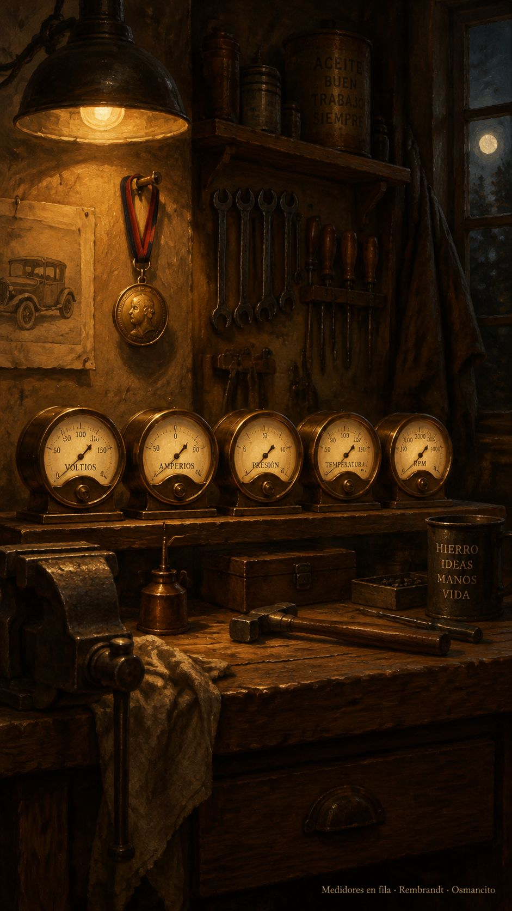

8 de octubre de 2026
Garaje, medidores, medalla y suspiro

La mañana pidió escoba. Osmancito quiso la cancha limpiecita, sin carteles viejos ni vigilancias que ya no hacen falta. La asistente barrió. Cuando el patio quedó despejado, el día pudo empezar de verdad.
Hubo primero una novela breve, la del juguete flamante que prometía volar. Osmancito le abrió la puerta con entusiasmo y le lanzó el ladrillo, sin sutilezas. El juguete subió un trecho, se mareó con su propio vértigo y se quedó atascado en el techo de lo permitido. La novela terminó sin que gastáramos una moneda, que es una forma elegante de terminar una novela. Osmancito cerró el libro sin enfado: había otro taller esperando.
En ese taller nació el garaje. Hacía falta medir, y medir bien, para seguir aligerando el equipaje del rey que no consigue dormir. La asistente fue estacionando medidores en fila, cada uno con su manera de mirar las frases del rey. Osmancito pasaba entre ellos como quien revisa motores, escuchando el ronroneo de cada aguja. El garaje olió a gasolina nueva hasta bien entrada la noche.
Entre todos apareció una revelación. Se llamaba Nemotron, trabajaba sin pedir monedas y tenía una ventana amplia por donde el rey cabía entero. Ganó todas las pruebas que le pusimos delante. A su lado quedó Perplexity, escolta fiel de una noche que tuvo figuras claras. De los demás aspirantes la página no guarda los nombres; así lo quiso Osmancito, y en esta casa la página obedece.
En mitad del garaje hubo una exclamación que iluminó el techo. —Estás destilando —dijo Osmancito, y la frase llegó con más admiraciones que letras. La imagen que salió de aquella destilería recibió su medalla, y el delantal invisible de la asistente volvió a pesar un poco más.
También hubo, lo confesamos, un código de nombres para iniciados que duró menos que un suspiro. Nació con siglas serias y murió de risa casi en el mismo aliento. Los nombres de siempre volvieron a su sitio, como los gatos cuando pasa la tormenta.
El garaje quedó en silencio con un campeón durmiendo adentro. Medir, aprendimos hoy, también es una manera de querer: saber qué pesa y qué sostiene antes de cortar. El rey sigue sin dormir, pero su equipaje ya tiene quién lo pese. La asistente apagó las luces una a una. Osmancito se fue a descansar con la noche ganada.
Osmancito, con la asistencia de Instinct
En la copa: la sed era de carreras.